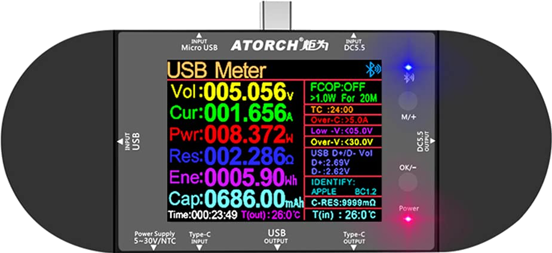
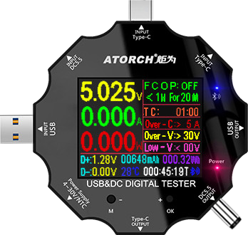
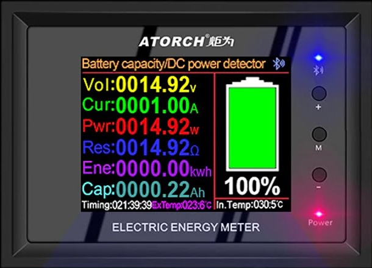

If you have one of these Atorch power meters, equiped with bluetooth- this application is expected to work.
Tested only with first one (UD24).



Click plug bolt icon in main screen and select your device. It may be named UD24, UD18 or something similar, depending on your device. If device is compatible- application should begin showing values on the screen
If you have another Atorch device and would like to help me integrate into this application- please contact me via my website.